pacman::p_load(sfdep, tmap,
spdep,
sf, plotly,
tidyverse,
Kendall)Take-home Ex 2
Take-home Exercise 2: Discovering impacts of COVID-19 on Thailand tourism economy at the province level using spatial and spatio-temporal statistics
1.0 Background
1.1 Objectives
We aim to discover:
If the key indicators of tourism economy of Thailand are independent from space and space and time.
If the tourism economy is indeed spatial and spatio-temporal dependent, then, you would like to detect where are the clusters and outliers, and the emerging hot spot/cold spot areas.
1.2 The Task
The specific tasks of this take-home exercise are as follows:
Using appropriate function of sf and tidyverse, preparing the following geospatial data layer:
a study area layer in sf polygon features. It must be at province level (including Bangkok) of Thailand.
a tourism economy indicators layer within the study area in sf polygon features.
a derived tourism economy indicator layer in spacetime s3 class of sfdep. Keep the time series at month and year levels.
Using the extracted data, perform global spatial autocorrelation analysis by using sfdep methods.
Using the extracted data, perform local spatial autocorrelation analysis by using sfdep methods.
Using the extracted data, perform emerging hotspot analysis by using sfdep methods.
Describe the spatial patterns revealed by the analysis above.
1.3 The Data
For the purpose of this take-home exercise, two data sets shall be used, they are:
Thailand Domestic Tourism Statistics at Kaggle. We will use version 2 of the data set.
Thailand - Subnational Administrative Boundaries at HDX. We will use the province boundary data set.
2.0 Getting Started
2.1 Setting up the R environment
2.2 Loading the Data
Loading the tourism economy indicators data:
tourism <- read_csv("data/rawdata/thailand_domestic_tourism_2019_2023_ver2.csv") %>%
select(1,3,5:7) %>%
rename(province = province_eng) %>%
pivot_wider(names_from = variable, values_from = value) %>%
mutate(year = year(date),
month = month(date))
tourism$date <- as.Date(tourism$date, format = "%Y-%m-%d")
tourism$year_month <- (as.numeric(format(tourism$date, "%Y")) - 2019) * 12 + as.numeric(format(tourism$date, "%m"))Loading the geospatial data, extracting the study area at province level:
province <- st_read("data/rawdata",
layer = "tha_admbnda_adm1_rtsd_20220121" ) %>%
dplyr::select(3,17) %>%
rename(province = ADM1_EN ) %>%
mutate(province = case_when(
province == "Buri Ram" ~ "Buriram",
province == "Chon Buri" ~ "Chonburi",
province == "Lop Buri" ~ "Lopburi",
province == "Nong Bua Lam Phu" ~ "Nong Bua Lamphu",
province == "Phangnga" ~ "Phang Nga",
province == "Prachin Buri" ~ "Prachinburi",
province == "Si Sa Ket" ~ "Sisaket",
province == "Chai Nat" ~ "Chainat",
TRUE ~ province))Reading layer `tha_admbnda_adm1_rtsd_20220121' from data source
`C:\rydialiang\isss626-aug24\Take-home Exercise\Take-home_Ex02\data\rawdata'
using driver `ESRI Shapefile'
Simple feature collection with 77 features and 16 fields
Geometry type: MULTIPOLYGON
Dimension: XY
Bounding box: xmin: 97.34336 ymin: 5.613038 xmax: 105.637 ymax: 20.46507
Geodetic CRS: WGS 84write_rds(province, "data/rds/province.rds")plot(province)
2.3 Joining the dataset
Joining the dataset using the province column.
data <- left_join(tourism,
province) %>%
st_as_sf() %>%
st_transform(crs = 32647)
write_rds(data, "data/rds/data.rds")2.4 Setting Seeds to Ensure Reproducibility
The set. seed() function is used to set a Random seed which Pseudo-random number generators use when generating “random” numbers. By using this function, we ensure that the randomly generated numbers remain the same when the code are reproduced.
set.seed(12345)3.0 Exploratory Data Analysis (EDA)
3.4 Comparing the Top 10
| S/N | Revenue All | Revenue Foreigner | Revenue Thai |
|---|---|---|---|
| 1 | Bangkok | Bangkok | Bangkok |
| 2 | Phuket | Phuket | Chiang Mai |
| 3 | Chonburi | Chonburi | Chonburi |
| 4 | Chang Mai | Surat Thani | Phuket |
| 5 | Krabi | Krabi | Prachuap Khiri Khan |
| 6 | Surat Thani | Chiang Mai | Chiang Rai |
| 7 | Prachuap Khiri Khan | Phang Nga | Phetchaburi |
| 8 | Songkhla | Songkhla | Khanchanaburi |
| 9 | Chiang Rai | Prachuap Khiri Khan | Krabi |
| 10 | Phetchaburi | Trat | Rayong |
3.5 Understanding number of Tourist
tourist_all <- data %>%
group_by(province) %>%
summarise(no_tourist_all = sum(no_tourist_all, na.rm = TRUE)) %>%
ungroup() ggplot(data = tourist_all) +
geom_bar(aes(x = reorder(province, -no_tourist_all), y = no_tourist_all, fill = province), stat = "identity") +
labs(title = "Total Number of Tourist by Province", x = "Province", y = "Total Number of Tourist") +
theme_minimal() +
theme(
axis.text.x = element_text(angle = 90, vjust = 0.5, hjust = 1),
plot.title = element_text(hjust = 0.5, size = 14, face = "bold"),
legend.position = "none")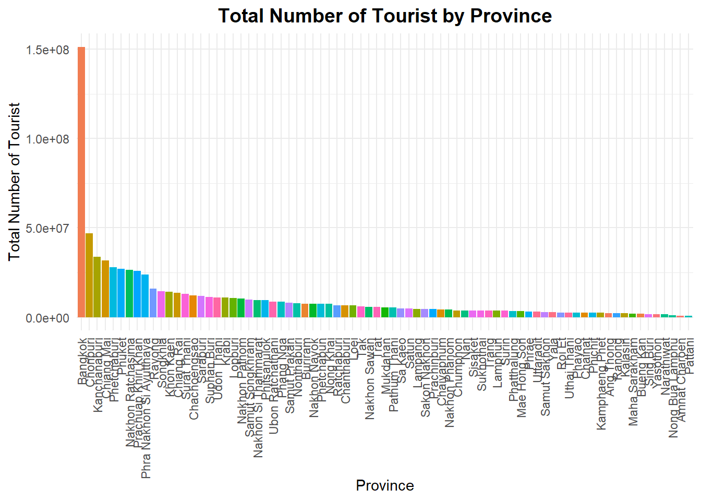
4.0 Creating a Time Series Cube
province <- read_rds("data/rds/province.rds")
data_st <- spacetime(data,
province,
.loc_col = "province",
.time_col = "year_month")
write_rds(data_st,"data/rds/data_st.rds")Confirming data_st as spacetime_cube:
is_spacetime_cube(data_st)[1] TRUE5.0 Global Spatial Autocorrelation Analysis
5.1 Visualising Regional Development Indicator
In this analysis, we will compare the sum all the relevant economic indicators for the year 2019 to 2023 to get a single value for each province to understand the global spatial autocorrelation
rev_all <- data %>%
group_by(province) %>%
summarise(revenue_all = sum(revenue_all,
na.rm = TRUE))
rev_all_2019 <- data %>%
filter(year == "2019") %>%
group_by(province) %>%
summarise(revenue_all = sum(revenue_all,
na.rm = TRUE))
rev_all_2020 <- data %>%
filter(year == "2020") %>%
group_by(province) %>%
summarise(revenue_all = sum(revenue_all,
na.rm = TRUE))all <- tm_shape(rev_all) +
tm_fill("revenue_all",
n = 8,
style = "quantile") +
tm_borders(alpha = 0.5) +
tm_layout(main.title = "Total Revenue")
all_2019 <- tm_shape(rev_all_2019) +
tm_fill("revenue_all",
n = 8,
style = "quantile") +
tm_borders(alpha = 0.5) +
tm_layout(main.title = "Revenue in 2019")
all_2020 <- tm_shape(rev_all_2020) +
tm_fill("revenue_all",
n = 8,
style = "quantile") +
tm_borders(alpha = 0.5) +
tm_layout(main.title = "Revenue in 2020")
tmap_arrange(all,
all_2019,
all_2020,
asp=1,
ncol=3)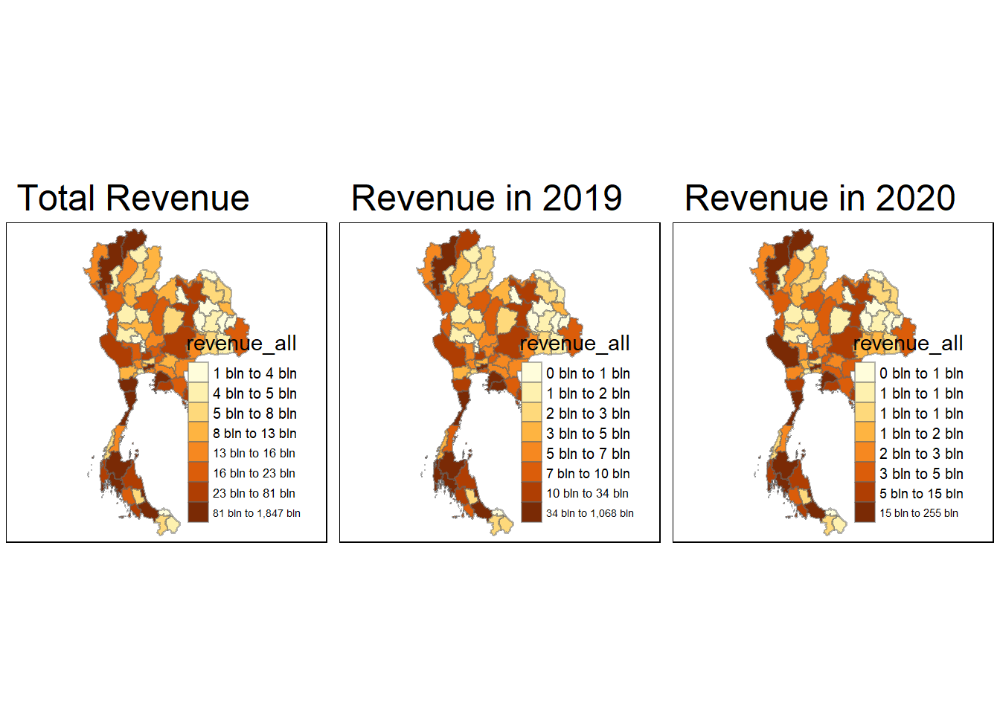
Note
By comparing the Sum of Total Revenue of 2019 to 2023, Total Revenue in 2019 and Total Revenue in 2020, we can see that by summing up the total revenue for all the years, the distribution is quite different from 2019 and 2020.
In fact, I have tried both revenue_all and revenue in just 2019, both cases did not have a significant p-value to reject the null hypothesis that the value at one location do not depend on depend on values at other (neighbouring) locations.
5.2 Computing Contiguity Spatial Weights
wm_q <- poly2nb(rev_all,
queen=TRUE)
summary(wm_q)Neighbour list object:
Number of regions: 77
Number of nonzero links: 352
Percentage nonzero weights: 5.93692
Average number of links: 4.571429
1 region with no links:
48
2 disjoint connected subgraphs
Link number distribution:
0 1 2 3 4 5 6 7 8 9
1 1 5 17 15 17 10 5 4 2
1 least connected region:
71 with 1 link
2 most connected regions:
17 69 with 9 linksSince there’s one province region 48 which has no contiguous neighbour, we would need to find out which province is it and manually assign it a neighbour. It is likely that this particular province is an island.
rev_all$province[48][1] "Phuket"After checking the province Phuket on the map, we can assign Phuket’s nearest non-contiguous neighbour as Phang Nga and Krabi.
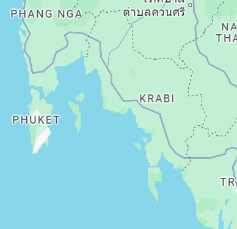
Using the code chunk below, we can identify the indices of Phang Nga (18) and Krabi (39), so as to edit the neighbour list before proceeding to the next step.
which(rev_all$province %in% c("Phang Nga", "Krabi"))[1] 18 395.2.1 Assigning the neighbours to Phuket
Besides assign Phang Nga and Krabi and neighbour to Phuket, we also need to add Phuket into Phang Nga and Krabi lists of neighbours.
wm_q[[48]] <- as.integer(c(18,39))
wm_q[[18]] <- as.integer(c(31,39,48,67,70))
wm_q[[39]] <- as.integer(c(18,48,51,67))rswm_q <- nb2listw(wm_q,
style="W",
zero.policy = TRUE)
rswm_qCharacteristics of weights list object:
Neighbour list object:
Number of regions: 77
Number of nonzero links: 356
Percentage nonzero weights: 6.004385
Average number of links: 4.623377
Weights style: W
Weights constants summary:
n nn S0 S1 S2
W 77 5929 77 36.85724 320.03535.3 Global Measures of Spatial Autocorrelation: Moran’s I
moran.test(rev_all$revenue_all,
listw=rswm_q,
zero.policy = TRUE,
na.action=na.omit)
Moran I test under randomisation
data: rev_all$revenue_all
weights: rswm_q
Moran I statistic standard deviate = -0.11051, p-value = 0.544
alternative hypothesis: greater
sample estimates:
Moran I statistic Expectation Variance
-0.018555519 -0.013157895 0.002385732
Important
Since p-value is 0.544 < 0.05, we conclude that we do not reject null hypothesis that the value at one location do not depend on depend on values at other (neighbouring) locations.
Moran I statistic is -0.0185 < 0, showing that values are dispersed, and observations tend to be dissimilar.
5.4 Computing Monte Carlo Moran’s I
set.seed(1234)
bperm= moran.mc(rev_all$revenue_all,
listw=rswm_q,
nsim=999,
zero.policy = TRUE,
na.action=na.omit)
bperm
Monte-Carlo simulation of Moran I
data: rev_all$revenue_all
weights: rswm_q
number of simulations + 1: 1000
statistic = -0.018556, observed rank = 644, p-value = 0.356
alternative hypothesis: greater
Important
Similarly for Monte Carlo Moran’s I, p-value = 0.356> 0.05, we conclude that we do not reject null hypothesis that the value at one location do not depend on values at other (neighbouring) locations.
hist(bperm$res,
freq=TRUE,
breaks=20,
xlab="Simulated Moran's I")
abline(v=0,
col="red") 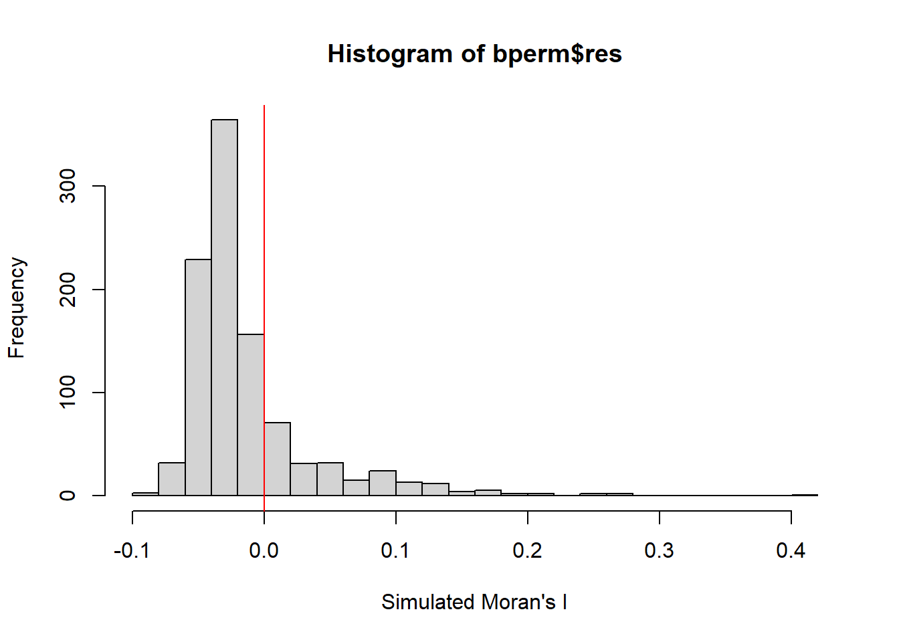
Important
Since the visualisation has suggested skewness in the data, we will apply log transformation to the data to normalise the skewed data, and perform the Moran’s I and Monte Carlo simulation again.
5.5 Applying log to Moran’s I and Monte Carlo Moran’s I
rev_all$log_revenue_all <- log(rev_all$revenue_all)moran.test(rev_all$log_revenue_all,
listw=rswm_q,
zero.policy = TRUE,
na.action=na.omit)
Moran I test under randomisation
data: rev_all$log_revenue_all
weights: rswm_q
Moran I statistic standard deviate = 3.1119, p-value = 0.0009294
alternative hypothesis: greater
sample estimates:
Moran I statistic Expectation Variance
0.222834238 -0.013157895 0.005750938
Important
After performing the log transformation on the revenue, we obtain the following results:
- p-value = 0.0009 < 0.05, we reject H0. We conclude that the value at one location depends on values at other (neighbouring) locations.
- Moran’s I statistic is 0.2228 > 0, indicating that values are Clustered, and observations tend to be similar.
- Monte Carlo simulations of 1000 times also confirmed similar results.
bperm= moran.mc(rev_all$log_revenue_all,
listw=rswm_q,
nsim=999,
zero.policy = TRUE,
na.action=na.omit)
bperm
Monte-Carlo simulation of Moran I
data: rev_all$log_revenue_all
weights: rswm_q
number of simulations + 1: 1000
statistic = 0.22283, observed rank = 999, p-value = 0.001
alternative hypothesis: greatermean(bperm$res[1:999])[1] -0.01085715var(bperm$res[1:999])[1] 0.005679189summary(bperm$res[1:999]) Min. 1st Qu. Median Mean 3rd Qu. Max.
-0.20175 -0.06421 -0.01690 -0.01086 0.04269 0.25231 hist(bperm$res,
freq=TRUE,
breaks=20,
xlab="Simulated Moran's I")
abline(v=0,
col="red") 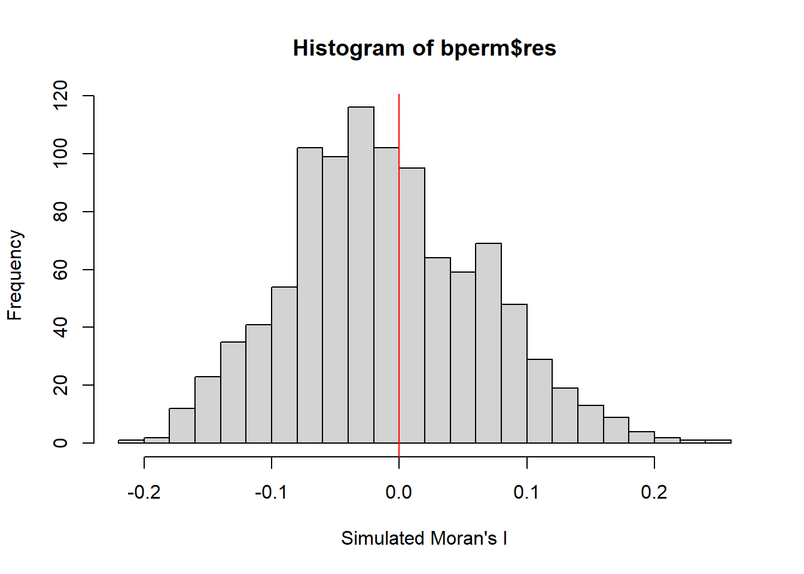
After log transformation, the monte carlo simulation of the Moran’s I also produced a normalise distribution.
5.6 Geary’s c
geary.test(rev_all$log_revenue_all,
listw=rswm_q)
Geary C test under randomisation
data: rev_all$log_revenue_all
weights: rswm_q
Geary C statistic standard deviate = 2.9039, p-value = 0.001843
alternative hypothesis: Expectation greater than statistic
sample estimates:
Geary C statistic Expectation Variance
0.752575230 1.000000000 0.007259683
Important
The results of Geary’s C using log transformed data is as follows:
- p-value = 0.0018 < 0.05, we reject H0. We conclude that the value at one location depends on values at other (neighbouring) locations.
- Geary’s C statistics is 0.736179399 <1. The values are Clustered, and observations tend to be similar to its immediate neighbours.
6.0 Local Indicators of Spatial Association (LISA)
6.1 Computing local Moran’s I
fips <- order(rev_all$province)
localMI <- localmoran(rev_all$log_revenue_all,
rswm_q)
head(localMI) Ii E.Ii Var.Ii Z.Ii Pr(z != E(Ii))
1 1.051168e+00 -4.329940e-02 1.034878e+00 1.07586673 0.28198686
2 1.374230e-01 -1.938165e-02 3.512310e-01 0.26458331 0.79133048
3 -8.566175e-01 -1.475173e-01 1.506277e+00 -0.57777029 0.56341922
4 4.201326e-01 -1.606609e-02 3.949183e-01 0.69411392 0.48761077
5 -8.081061e-05 -3.274493e-06 4.773758e-05 -0.01122209 0.99104625
6 1.824269e-02 -9.176880e-06 8.008283e-05 2.03956493 0.04139368printCoefmat(data.frame(
localMI[fips,],
row.names=rev_all$province[fips]),
check.names=FALSE) Ii E.Ii Var.Ii Z.Ii
Amnat Charoen 1.0512e+00 -4.3299e-02 1.0349e+00 1.0759e+00
Ang Thong 1.3742e-01 -1.9382e-02 3.5123e-01 2.6458e-01
Bangkok -8.5662e-01 -1.4752e-01 1.5063e+00 -5.7777e-01
Bueng Kan 4.2013e-01 -1.6066e-02 3.9492e-01 6.9411e-01
Buriram -8.0811e-05 -3.2745e-06 4.7738e-05 -1.1222e-02
Chachoengsao 1.8243e-02 -9.1769e-06 8.0083e-05 2.0396e+00
Chainat 5.5545e-01 -1.3272e-02 2.4201e-01 1.1561e+00
Chaiyaphum -3.3008e-01 -6.2269e-03 1.1436e-01 -9.5767e-01
Chanthaburi 2.2156e-01 -9.0556e-04 1.3190e-02 1.9371e+00
Chiang Mai 2.3592e-01 -5.2089e-02 7.1983e-01 3.3946e-01
Chiang Rai 5.1042e-01 -2.2095e-02 5.3978e-01 7.2480e-01
Chonburi 1.0721e+00 -7.7040e-02 1.7763e+00 8.6218e-01
Chumphon 9.0939e-03 -1.4645e-06 3.6585e-05 1.5037e+00
Kalasin 3.6335e-01 -1.7235e-02 2.0288e-01 8.4495e-01
Kamphaeng Phet 1.4562e-01 -8.7427e-03 1.2634e-01 4.3427e-01
Kanchanaburi -2.2478e-01 -1.7522e-02 2.5097e-01 -4.1371e-01
Khon Kaen -2.7185e-01 -6.6982e-03 5.0851e-02 -1.1758e+00
Krabi 2.1177e+00 -3.7038e-02 5.1997e-01 2.9882e+00
Lampang -9.1571e-03 -5.4707e-05 5.5360e-04 -3.8686e-01
Lamphun -5.3757e-01 -7.9145e-03 1.9616e-01 -1.1959e+00
Loei 6.2503e-03 -2.3194e-04 2.7775e-03 1.2300e-01
Lopburi 7.2637e-04 -3.2611e-07 2.8459e-06 4.3077e-01
Mae Hong Son -1.8366e-02 -3.8627e-06 1.4673e-04 -1.5159e+00
Maha Sarakham 4.3807e-01 -1.7813e-02 2.5506e-01 9.0268e-01
Mukdahan 4.1061e-01 -1.9267e-03 2.3033e-02 2.7182e+00
Nakhon Nayok 1.0095e-02 -1.2694e-04 1.8504e-03 2.3764e-01
Nakhon Pathom -1.6539e-02 -1.1028e-05 1.1160e-04 -1.5645e+00
Nakhon Phanom 3.6864e-01 -3.9985e-03 9.9491e-02 1.1814e+00
Nakhon Ratchasima 1.8609e-02 -1.1108e-02 9.5859e-02 9.5981e-02
Nakhon Sawan 6.7644e-02 -1.9823e-04 1.7296e-03 1.6313e+00
Nakhon Si Thammarat 4.9652e-01 -4.3792e-03 6.3564e-02 1.9868e+00
Nan 2.2033e-01 -1.4073e-03 3.5109e-02 1.1834e+00
Narathiwat 6.2023e-01 -6.8989e-03 2.6026e-01 1.2293e+00
Nong Bua Lamphu -6.4290e-01 -4.9534e-02 1.1762e+00 -5.4712e-01
Nong Khai 2.3799e-02 -6.6115e-05 1.2217e-03 6.8276e-01
Nonthaburi -1.7164e-01 -4.7287e-04 8.7344e-03 -1.8314e+00
Pathum Thani -3.1559e-01 -2.6982e-03 3.2232e-02 -1.7428e+00
Pattani -1.0466e-01 -2.1400e-02 5.2317e-01 -1.1511e-01
Phang Nga 1.5826e+00 -1.6473e-02 2.9941e-01 2.9223e+00
Phatthalung -3.7416e-01 -4.7875e-03 8.8050e-02 -1.2448e+00
Phayao -5.9504e-02 -7.2740e-03 1.3345e-01 -1.4298e-01
Phetchabun -3.4087e-02 -1.1215e-03 1.1337e-02 -3.0960e-01
Phetchaburi 3.8417e-01 -1.9094e-02 4.6791e-01 5.8953e-01
Phichit 7.4950e-02 -1.0475e-02 1.9156e-01 1.9518e-01
Phitsanulok -1.3347e-01 -1.2638e-03 1.5119e-02 -1.0752e+00
Phra Nakhon Si Ayutthaya -1.8315e-01 -7.5000e-03 7.5331e-02 -6.3999e-01
Phrae 2.5363e-01 -4.4907e-03 6.5174e-02 1.0111e+00
Phuket 3.9078e+00 -1.0276e-01 3.5025e+00 2.1430e+00
Prachinburi -3.1886e-02 -1.9438e-04 3.5915e-03 -5.2882e-01
Prachuap Khiri Khan 8.5114e-01 -2.5820e-02 9.5549e-01 8.9715e-01
Ranong -4.1456e-01 -2.6630e-03 6.6351e-02 -1.5991e+00
Ratchaburi -6.7484e-02 -8.9903e-04 1.3095e-02 -5.8187e-01
Rayong 1.3952e+00 -1.4243e-02 5.3335e-01 1.9300e+00
Roi Et 8.7064e-01 -1.2304e-02 1.4556e-01 2.3143e+00
Sa Kaeo 1.3042e-03 -4.6094e-07 6.7199e-06 5.0330e-01
Sakon Nakhon 2.4550e-01 -3.5373e-03 4.2219e-02 1.2120e+00
Samut Prakan -5.7312e-02 -1.5179e-05 5.7660e-04 -2.3861e+00
Samut Sakhon -6.1537e-01 -9.6432e-03 1.7649e-01 -1.4418e+00
Samut Songkhram -5.3086e-03 -4.3930e-04 1.0970e-02 -4.6491e-02
Saraburi 3.7606e-02 -2.6935e-04 3.9257e-03 6.0450e-01
Satun 1.0253e-01 -1.2689e-03 3.1659e-02 5.8337e-01
Sing Buri 5.7502e-01 -2.0615e-02 2.9435e-01 1.0979e+00
Sisaket 5.4221e-01 -7.7664e-03 1.4241e-01 1.4574e+00
Songkhla -4.0241e-01 -2.6090e-02 3.7043e-01 -6.1831e-01
Sukhothai 9.6600e-02 -1.5420e-03 1.8441e-02 7.2271e-01
Suphan Buri -1.7258e-02 -3.1315e-05 3.1690e-04 -9.6768e-01
Surat Thani 9.5953e-01 -3.5176e-02 4.9478e-01 1.4141e+00
Surin 3.6060e-01 -3.2935e-03 6.0663e-02 1.4774e+00
Tak 2.0506e-03 -3.1286e-04 2.3905e-03 4.8340e-02
Trang 9.1032e-02 -4.5321e-04 8.3715e-03 9.9989e-01
Trat 1.9160e-01 -7.0184e-03 5.3662e-01 2.7113e-01
Ubon Ratchathani -1.1696e-01 -9.9978e-05 2.4974e-03 -2.3383e+00
Udon Thani -2.1310e-01 -2.2479e-03 2.6864e-02 -1.2864e+00
Uthai Thani -4.0764e-02 -1.0342e-02 1.4922e-01 -7.8756e-02
Uttaradit 1.6358e-01 -6.3263e-03 1.1617e-01 4.9850e-01
Yala 8.6291e-02 -2.5222e-03 6.2852e-02 3.5426e-01
Yasothon 1.1095e+00 -2.7394e-02 3.8843e-01 1.8242e+00
Pr.z....E.Ii..
Amnat Charoen 0.2820
Ang Thong 0.7913
Bangkok 0.5634
Bueng Kan 0.4876
Buriram 0.9910
Chachoengsao 0.0414
Chainat 0.2477
Chaiyaphum 0.3382
Chanthaburi 0.0527
Chiang Mai 0.7343
Chiang Rai 0.4686
Chonburi 0.3886
Chumphon 0.1327
Kalasin 0.3981
Kamphaeng Phet 0.6641
Kanchanaburi 0.6791
Khon Kaen 0.2397
Krabi 0.0028
Lampang 0.6989
Lamphun 0.2317
Loei 0.9021
Lopburi 0.6666
Mae Hong Son 0.1295
Maha Sarakham 0.3667
Mukdahan 0.0066
Nakhon Nayok 0.8122
Nakhon Pathom 0.1177
Nakhon Phanom 0.2375
Nakhon Ratchasima 0.9235
Nakhon Sawan 0.1028
Nakhon Si Thammarat 0.0469
Nan 0.2366
Narathiwat 0.2190
Nong Bua Lamphu 0.5843
Nong Khai 0.4948
Nonthaburi 0.0670
Pathum Thani 0.0814
Pattani 0.9084
Phang Nga 0.0035
Phatthalung 0.2132
Phayao 0.8863
Phetchabun 0.7569
Phetchaburi 0.5555
Phichit 0.8453
Phitsanulok 0.2823
Phra Nakhon Si Ayutthaya 0.5222
Phrae 0.3120
Phuket 0.0321
Prachinburi 0.5969
Prachuap Khiri Khan 0.3696
Ranong 0.1098
Ratchaburi 0.5607
Rayong 0.0536
Roi Et 0.0207
Sa Kaeo 0.6148
Sakon Nakhon 0.2255
Samut Prakan 0.0170
Samut Sakhon 0.1493
Samut Songkhram 0.9629
Saraburi 0.5455
Satun 0.5596
Sing Buri 0.2723
Sisaket 0.1450
Songkhla 0.5364
Sukhothai 0.4699
Suphan Buri 0.3332
Surat Thani 0.1573
Surin 0.1396
Tak 0.9614
Trang 0.3174
Trat 0.7863
Ubon Ratchathani 0.0194
Udon Thani 0.1983
Uthai Thani 0.9372
Uttaradit 0.6181
Yala 0.7231
Yasothon 0.06816.2 Mapping the local Moran’s I and Moran’s I values, with p-value
rev_all.localMI <- cbind(rev_all,localMI) %>%
rename(Pr.Ii = Pr.z....E.Ii..)localMI.map <- tm_shape(rev_all.localMI) +
tm_fill(col = "Ii",
style = "pretty",
title = "local moran statistics") +
tm_borders(alpha = 0.5)
pvalue.map <- tm_shape(rev_all.localMI) +
tm_fill(col = "Pr.Ii",
breaks=c(-Inf, 0.05, Inf),
palette="-Blues",
title = "local Moran's I p-values") +
tm_borders(alpha = 0.5)
tmap_arrange(localMI.map, pvalue.map, asp=1, ncol=2)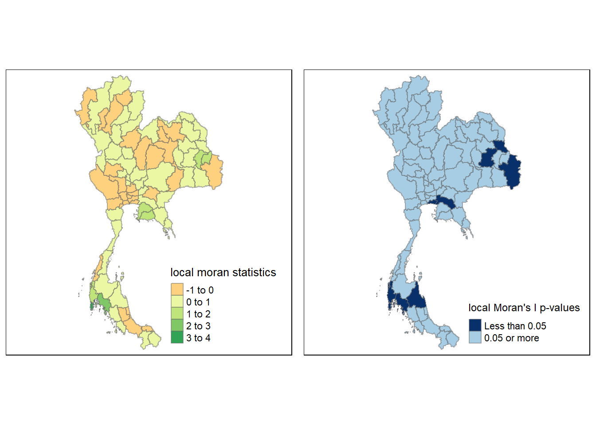
Important
From the Local Moran’s I statistics and p-values, we can conclude that there are four clusters based on p-value < 0.0.5
6.3 Creating a LISA Cluster Map
rev_all.Z <- scale(rev_all$log_revenue_all) %>%
as.vector
nci <- moran.plot(rev_all.Z,
rswm_q,
labels=as.character(rev_all$province),
xlab="Revenue_All",
ylab="Spatially Lag Revenue_All")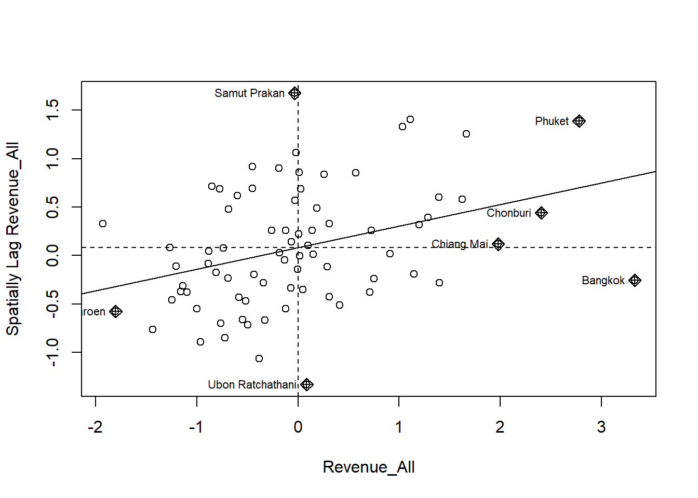
Note
From the above, we can draw the following conclusion:
- Phuket is in the high high autocorrelation, where it is a positive cluster with Phang Nga, and Krabi, where the neighbours also have high values.
- Bangkok is a high outlier among its low neighbours
- Amnat Charoen is in the low low autocorrelation, where it is a positive cluster with Yasothon, Mukdahan
- Ubon Ratchathani seems to be just a slightly high outlier among its low neighbours
6.3.1 Preparing LISA map classes
quadrant <- vector(mode="numeric",length=nrow(localMI))
rev_all$lag_log_revenue_all <- lag.listw(rswm_q, rev_all$log_revenue_all)
DV <- rev_all$lag_log_revenue_all - mean(rev_all$lag_log_revenue_all) LM_I <- localMI[,1] - mean(localMI[,1]) Set Significance level:
signif <- 0.05 Defining the quadrants
quadrant[DV <0 & LM_I>0] <- 1
quadrant[DV >0 & LM_I<0] <- 2
quadrant[DV <0 & LM_I<0] <- 3
quadrant[DV >0 & LM_I>0] <- 4 Placing all non-significant Moran in the category 0:
quadrant[localMI[,5]>signif] <- 06.3.2 Plotting LISA map
gdppc <- qtm(rev_all, "log_revenue_all")
rev_all.localMI$quadrant <- quadrant
colors <- c("#ffffff", "#2c7bb6", "#abd9e9", "#fdae61", "#d7191c")
clusters <- c("insignificant", "low-low", "low-high", "high-low", "high-high")
LISAmap <- tm_shape(rev_all.localMI) +
tm_fill(col = "quadrant",
style = "cat",
palette = colors[c(sort(unique(quadrant)))+1],
labels = clusters[c(sort(unique(quadrant)))+1],
popup.vars = c("")) +
tm_view(set.zoom.limits = c(11,17)) +
tm_borders(alpha=0.5)
tmap_arrange(gdppc, LISAmap,
asp=1, ncol=2)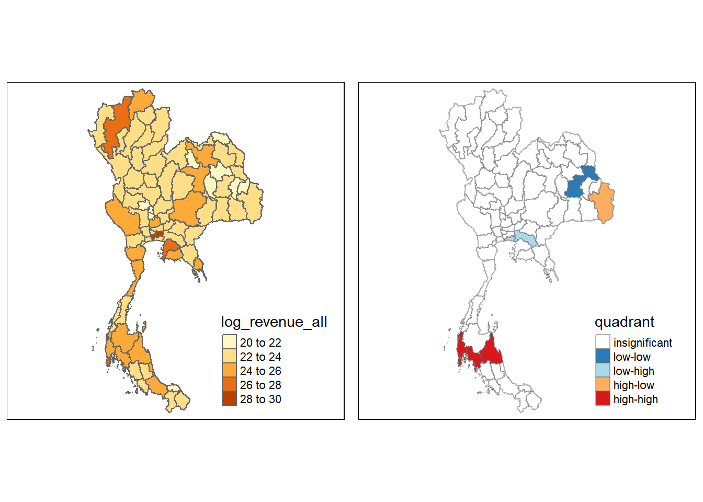
Important
Using the LISA map we can conclude:
- Mukdhan and Roi Et are in low-low cluster.
- Ubon Ratchathani is high outlier with low neighbours.
- Pkuket, Phang Nga, Krabi and Nakhon Si Thammarat are high-high cluster.
- Chachoengsao and Samut Prakan are low outliers in with high neighbour (i.e. Bangkok)
7.0 Emerging Hot Spot Analysis (EHSA)
7.1 Computing local Gi* statistics
Using the space time cube created before, we will now derive the inverse weight distance using the following code chunk:
data_st <- read_rds("data/rds/data_st.rds")
st_nb <- data_st %>%
activate("geometry") %>%
mutate(nb = include_self(
st_contiguity(geometry)),
wt = st_inverse_distance(nb,
geometry,
scale = 1,
alpha = 1),
.before = 1) %>%
set_nbs("nb") %>%
set_wts("wt")gi_stars <- st_nb %>%
group_by(year_month) %>%
mutate(gi_star = local_gstar_perm(
revenue_all, nb, wt)) %>%
tidyr::unnest(gi_star)7.2 Mann-Kendall Test on Gi
cbg <- gi_stars %>%
ungroup() %>%
filter(province == "Bangkok") %>%
select(province, year_month, gi_star)ggplot(data = cbg,
aes(x = year_month,
y = gi_star)) +
geom_line() +
theme_light()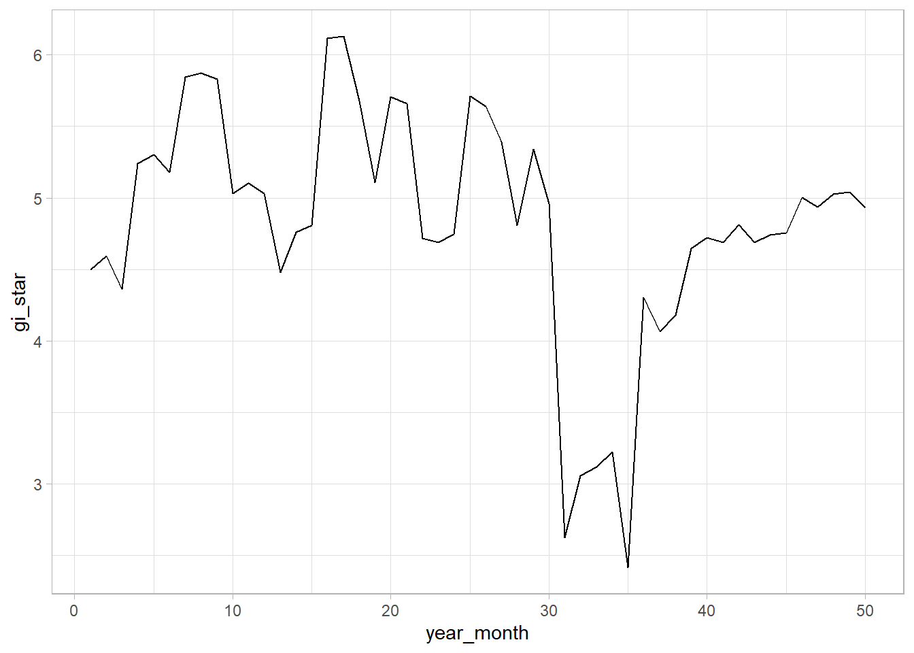
7.3 Mann-Kendall Test Report
cbg %>%
summarise(mk = list(
unclass(
Kendall::MannKendall(gi_star)))) %>%
tidyr::unnest_wider(mk)# A tibble: 1 × 6
tau sl S D varS geometry
<dbl> <dbl> <dbl> <dbl> <dbl> <MULTIPOLYGON [m]>
1 -0.185 0.0587 -227 1225 14292. (((674339.8 1543300, 674382.3 1543278, 67444…
Note
Tau = -0.1853 (perfectly decreasing series)
Since the p-value = 0.0587 > 0.05, we do not reject the null hypothesis that revenue_all is a monotonic decreasing series for 2019 to 2023.
7.4 Mann-Kendall by Province
ehsa <- gi_stars %>%
group_by(province) %>%
summarise(mk = list(
unclass(
Kendall::MannKendall(gi_star)))) %>%
tidyr::unnest_wider(mk)
head(ehsa)# A tibble: 6 × 7
province tau sl S D varS geometry
<chr> <dbl> <dbl> <dbl> <dbl> <dbl> <MULTIPOLYGON [m]>
1 Amnat Charoen -0.202 0.0396 -247 1225 14292. (((1137720 1809629, 1137724 1…
2 Ang Thong 0.0449 0.651 55 1225 14292. (((643472.8 1636469, 643496 1…
3 Bangkok -0.185 0.0587 -227 1225 14292. (((674339.8 1543300, 674382.3…
4 Bueng Kan -0.110 0.262 -135 1225 14292. (((965496 2045531, 965625.5 2…
5 Buriram 0.0678 0.493 83 1225 14292. (((921217 1750212, 921217 175…
6 Chachoengsao -0.229 0.0192 -281 1225 14292. (((722656.1 1546054, 722796 1…emerging <- ehsa %>%
arrange(sl, abs(tau)) %>%
slice(1:10)
head(emerging)# A tibble: 6 × 7
province tau sl S D varS geometry
<chr> <dbl> <dbl> <dbl> <dbl> <dbl> <MULTIPOLYGON [m]>
1 Trang -0.517 1.25e-7 -633 1225 14292. (((552555.6 770748.6, 55…
2 Phayao 0.496 3.58e-7 607 1225 14292. (((648755.2 2182064, 648…
3 Nakhon Si Thammar… -0.489 5.67e-7 -599 1225 14292. (((585074.4 1029631, 585…
4 Krabi -0.484 7.35e-7 -593 1225 14292. (((512499 827838.6, 5125…
5 Surat Thani -0.484 7.35e-7 -593 1225 14292. (((605865.7 1029259, 605…
6 Phang Nga -0.399 4.46e-5 -489 1225 14292. (((457515.4 856050.4, 45…7.5 Performing Monte Carlo Simulation on EHSA
ehsa <- emerging_hotspot_analysis(
x = data_st,
.var = "revenue_all",
k = 1,
nsim = 99
)ehsa_plot <- as.data.frame(ehsa)
ggplot(data = ehsa_plot,
aes(x = classification))+
geom_bar()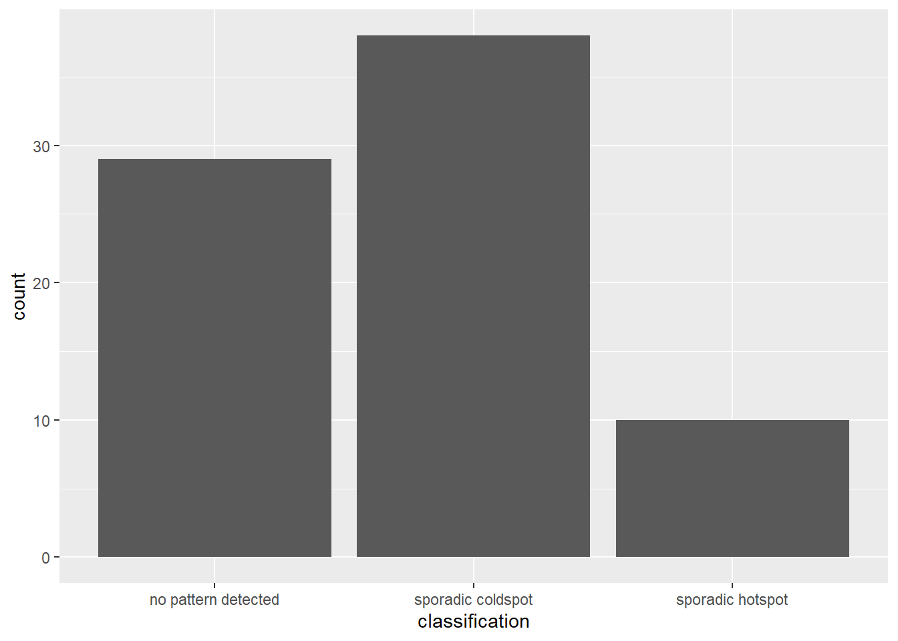
data_ehsa <- data %>%
as.data.frame() %>%
left_join(ehsa,
by = join_by(province == location)) %>%
st_as_sf()7.6 Visualising EHSA
ehsa_sig <- data_ehsa %>%
filter(p_value < 0.05)
tmap_mode("plot")
tm_shape(data_ehsa) +
tm_polygons() +
tm_borders(alpha = 0.5) +
tm_shape(ehsa_sig) +
tm_fill("classification") +
tm_borders(alpha = 0.4)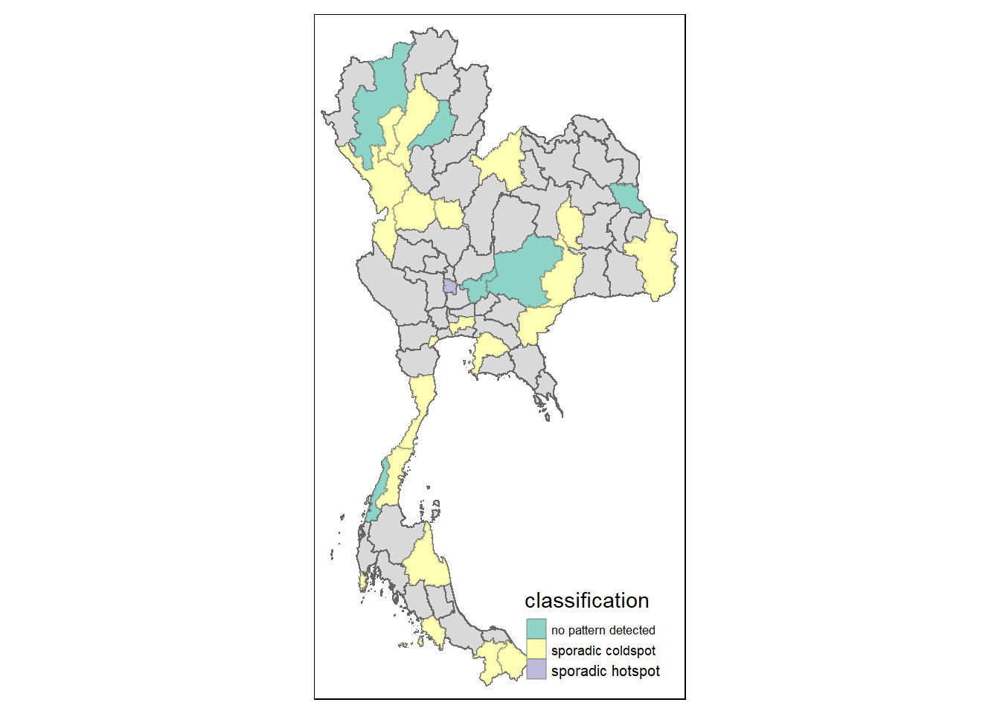
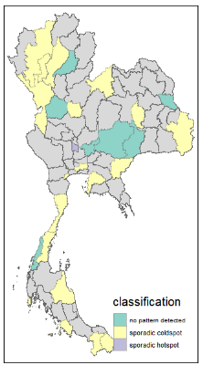
Important
Sporadic Cold Spots - A lot of Thailand’s provinces are sporadic cold spot, where 90% of the time they are statistically significant, and none of the time these province are significant hotspots. It means that these provinces almost never provides tourism revenue.
Sporadic Hot Spots - One Thailand’s provinces is sporadic hot spots, where 90% of the time they are statistically significant, and none of the time these province are significant coldspots. It means that these provinces are the ones likely to contribute to tourism revenue.